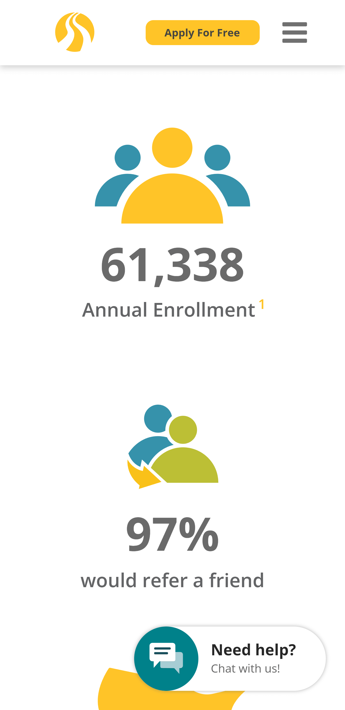

Repetition
BYU Pathway
byupathway.org The BYU Pathway homepage achieves consistency through repetition in its presentation of information. A pattern of image, number, and short description shows the application of the principle of repetition. This helps users understand what the numbers mean and gives the page a cohesive look.
Alignment
BYU Pathway
byupathway.orgThe BYU Pathway homepage navigation follows the design principle of alignment. Their menus, along with the icons, have horizontal and vertical alignment.
Fitt's Law
BYU Pathway
byupathway.orgThe BYU Pathway homepage 'Apply Now' button follows the principle of Fitt's Law. Making this button bigger gives it more importance, thus drawing the attention of the user to this Call-To-Action button. 'Donate' also catches attention because of its different color, but having the 'Apply Now' bigger makes it more important.